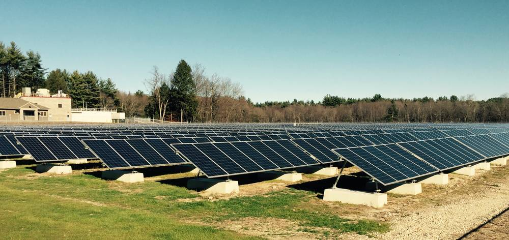

미국 뉴햄프셔 재퍼리, 덮어 둔 쓰레기 매립지에 1.34MW 공동체 태양광 완공…전기 100%를 저소득 약 250가구에

연 170만kWh 생산, 참여 가구 전기요금 연 약 7만5,000달러·사업 기간 약 200만 달러 절감 전망…타운은 부지 임대료로 새 세입 얻어
미국 뉴햄프셔주 재퍼리 타운이 쓰임새 없이 덮어 두었던 옛 쓰레기 매립지에 1.34MW 규모 공동체 태양광을 완공하고 준공식을 열었다. 미국에서 조립한 태양광 패널 2,266장으로 한 해 170만kWh 넘는 전기를 만들고, 탄소 배출은 해마다 약 933톤 줄일 것으로 보인다. 생산 전기는 전부 주 정부 전기요금 지원 제도(EAP)에 등록된 저소득·중간소득 가구 몫으로 돌아가며, 대상은 약 250가구, 요금 절감액은 연 약 7만5,000달러, 사업 기간 전체로는 약 200만 달러로 추산된다. 개발은 직원 소유 태양광 기업 리비전 에너지가, 자금은 투자기관 블루 헤이븐 솔라가 맡았고, 타운은 부지를 빌려 주고 해마다 임대료를 받아 개발이 어려웠던 땅에서 새 세입을 얻는다. 준공식에 참석한 지역구 연방 하원의원은 이 사업을 "드문 완벽한 토지 이용"이라고 평가했다.
시민에너지 관점
덮어 둔 매립지는 농지나 숲을 건드리지 않는 땅인데, 재퍼리는 여기서 나온 전기를 전부 저소득 약 250가구의 요금을 덜어 주는 데 돌려 태양광 이익이 땅 가진 사람에게만 간다는 우려에 답했다. 다만 소유가 외부 투자기관에 있으면 지역에 남는 몫은 임대료와 요금 할인에 그친다. 지자체나 주민 협동조합이 직접 소유해야 발전 수익까지 지역에 남고, 그 돈이 다시 다음 발전소의 종잣돈이 된다. 우리도 사용을 끝낸 매립지·하수처리장 같은 공공부지를 목록으로 만들고, 시민이 출자해 취약계층과 이익을 나누는 공공부지 햇빛발전을 서둘러야 한다.
출처: ReVision Energy(보도자료) 2026-11-06 기자 미표기(회사 발표) 원문 보기
창간 전 시험 발행 기사입니다.
米ニューハンプシャー州ジャフリー、覆土した旧ごみ埋立地に1.34MWのコミュニティ太陽光が完成…電力の100%を低所得の約250世帯へ
年170万kWhを発電、参加世帯の電気料金を年約7万5,000ドル・事業期間で約200万ドル削減の見通し…町は用地の賃料で新たな歳入
米ニューハンプシャー州ジャフリー町が、覆土したまま使い道のなかった旧ごみ埋立地に出力1.34MWのコミュニティ太陽光発電所を完成させ、竣工式を開いた。米国で組み立てた太陽光パネル2,266枚で年170万kWh以上を発電し、炭素排出を毎年約933トン減らす見込みだ。発電した電力はすべて州の電気料金支援制度（EAP）に登録した低・中所得世帯に振り向けられ、対象は約250世帯、料金の節約額は年約7万5,000ドル、事業期間全体で約200万ドルと試算されている。開発は従業員所有の太陽光企業リビジョン・エナジー、資金は投資機関ブルー・ヘイブン・ソーラーが担い、町は用地を貸して毎年賃料を受け取り、開発の難しかった土地から新たな歳入を得る。竣工式に出席した地元選出の連邦下院議員は、この事業を「まれに見る完璧な土地利用」と評価した。
市民エネルギーの視点
覆土した埋立地は農地や森林に手をつけずに済む土地であり、ジャフリーはそこで生まれた電力をすべて低所得の約250世帯の料金軽減に回し、太陽光の利益は土地を持つ人にしか行かないという懸念に答えた。ただし所有が外部の投資機関にある限り、地域に残るのは賃料と料金割引にとどまる。自治体や住民協同組合が自ら所有してこそ発電収益まで地域に残り、その資金が次の発電所の元手になる。韓国でも使用を終えた埋立地や下水処理場などの公共用地を一覧にし、市民が出資して脆弱層と利益を分け合う公共用地の太陽光発電を急ぐべきだ。
出典: ReVision Energy(보도자료) 2026-11-06 기자 미표기(회사 발표) 原文を読む
創刊前の試験発行記事です。
美国新罕布什尔州杰弗里镇在封场垃圾填埋场建成1.34兆瓦社区光伏…电力100%供约250户低收入家庭
年发电170万千瓦时，预计每年为参与家庭节省电费约7万5,000美元、项目期内约200万美元…镇政府以场地租金获得新财源
美国新罕布什尔州杰弗里镇在一处已封场、长期闲置的旧垃圾填埋场上建成装机1.34兆瓦的社区光伏电站，并举行了竣工仪式。电站使用2,266块美国组装的光伏板，每年发电170万千瓦时以上，预计每年减少碳排放约933吨。所发电力全部分配给登记参加州电费援助计划（EAP）的低收入和中等收入家庭，受益约250户，预计每年节省电费约7万5,000美元，整个项目期内约200万美元。项目由员工持股的光伏企业ReVision Energy开发，投资机构Blue Haven Solar提供资金；镇政府出租场地并每年收取租金，从难以开发的土地上获得新的财政收入。出席仪式的当地联邦众议员称该项目是"难得的完美土地利用"。
市民能源视角
封场填埋场不占用农田和森林，杰弗里镇把这里发出的电全部用于减轻约250户低收入家庭的电费，回应了"光伏收益只归土地所有者"的担忧。但只要所有权在外部投资机构手中，留在当地的就只有租金和电费折扣。只有由地方政府或居民合作社直接持有，发电收益才能留在本地，并成为下一座电站的启动资金。韩国也应尽快梳理已停用的填埋场、污水处理厂等公共用地，推动由市民出资、与弱势群体分享收益的公共用地光伏发电。
来源: ReVision Energy(보도자료) 2026-11-06 기자 미표기(회사 발표) 查看原文
本文为创刊前试发行文章。
Jaffrey, New Hampshire, Completes 1.34 MW Community Solar Array on Capped Landfill, With 100% of Power Going to About 250 Low-Income Households
Array to produce 1.7 million kWh a year and save participating households about $75,000 a year and some $2 million over the project's life; town gains new revenue from site lease
The town of Jaffrey, New Hampshire, has completed a 1.34 MW community solar array on a capped former landfill that had sat unused, and marked the occasion with a ribbon cutting. Its 2,266 US-assembled panels are expected to generate more than 1.7 million kWh a year and avoid about 933 tonnes of carbon emissions annually. All of the output is allocated to low- and moderate-income households enrolled in the state's Electric Assistance Program (EAP): about 250 households, with bill savings estimated at roughly $75,000 a year and about $2 million over the life of the project. Employee-owned solar company ReVision Energy developed the array and investor Blue Haven Solar financed it, while the town leases the site and collects annual payments, turning hard-to-develop land into a new revenue stream. The local member of Congress who attended the ceremony called it "one of the rare examples of a perfect use of land."
Citizen Energy View
A capped landfill spares farmland and forest, and by sending every kilowatt-hour to about 250 low-income households Jaffrey answers the worry that solar benefits only those who own land. Yet as long as ownership sits with an outside investor, what stays local is limited to lease payments and bill discounts. Only when municipalities or resident cooperatives own the assets do the generation profits stay in the community and seed the next project. Korea should map its closed landfills, sewage plants and other public land and move quickly on citizen-funded public-land solar that shares returns with vulnerable households.
Source: ReVision Energy(보도자료) 2026-11-06 기자 미표기(회사 발표) Read the original
This article was published during the trial period before launch.